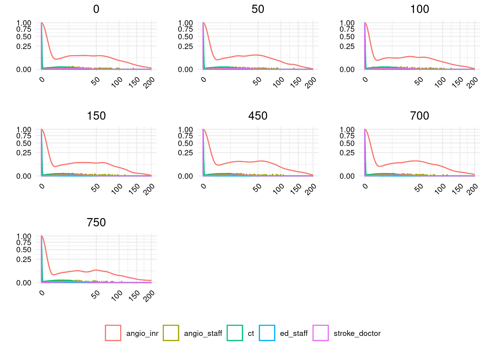

# Clear environment
rm(list=ls())
# Start timer
start.time <- Sys.time()
# Disable scientific notation
options(scipen=999)
# Import required libraries (if not otherwise import in model.R)
library(ggplot2)
library(data.table)
library(ggpubr)
library(tidyr, include.only = c("pivot_wider"))
# Get the model function (but hide loading warnings for each package)
suppressMessages(source("model.R"))Reproduction
Set up
# Set the seed
SEED = 200
# Set file paths to save results
folder = "outputs"
path_baseline_f2 <- file.path(folder, "fig2_baseline.csv.gz")
path_exclusive_f2 <- file.path(folder, "fig2_exclusive.csv.gz")
path_twoangio_f2 <- file.path(folder, "fig2_twoangio.csv.gz")
path_baseline_f2_code <- file.path(folder, "fig2_baseline_codedefault.csv.gz")
path_baseline_f2_cloudes <- file.path(folder, "fig2_baseline_cloudes.csv.gz")
path_baseline_f3 <- file.path(folder, "fig3_baseline.csv.gz")
path_exclusive_f3 <- file.path(folder, "fig3_exclusive.csv.gz")
path_twoangio_f3 <- file.path(folder, "fig3_twoangio.csv.gz")
path_baseline_f3_seed500 <- file.path(folder, "fig3_baseline_seed500.csv.gz")
path_baseline_f3_seed700 <- file.path(folder, "fig3_baseline_seed700.csv.gz")
path_txt2 <- file.path(folder, "txt2.csv")
path_txt3 <- file.path(folder, "txt3.csv")
path_txt3_seeds <- file.path(folder, "txt3_seeds.csv")
path_fig2 <- file.path(folder, "fig2.png")
path_fig2a_code <- file.path(folder, "fig2a_codeparam.png")
path_fig2a_cloudes <- file.path(folder, "fig2a_cloudes.png")
path_fig2a_seeds <- file.path(folder, "fig2a_seeds.png")
path_fig3 <- file.path(folder, "fig3.png")Functions
run_model <- function(angio_inr = 1,
angio_ir = 1,
ir = 2,
angio_staff = 6,
ed_pt = 107700,
inr_pt = 104,
eir_pt= 468,
ir_pt = 3805,
shifts = c(8,17),
run_t = 365,
nsim = 30,
exclusive_use = FALSE,
seed = 42,
ed_triage = c(20,10)) {
#' Run model and get results
#'
#' @param angio_inr number of AngioINR machines
#' @param angio_ir number of AngioIR machines
#' @param ir number of interventional radiologists on day shift
#' @param angio_staff number of angiography staff on day shift
#' @param ed_pt number of ED patients
#' @param inr_pt number of elective INR patients
#' @param eir_pt number of emergency IR patients
#' @param ir_pt number of elective IR patients
#' @param shifts tuple with start and finish time of day shift
#' @param run_t simulation runtime in days
#' @param nsim number of replications
#' @param exclusive_use whether angioINR has exclusive use (i.e. no elective
#' IR patients allowed to use the machine)
#' @param seed integer that provides seed to be incremented on in each
#' replication (e.g. run 1 is seed+=1, run 2 is seed+=2)
#' @param ed_triage tuple with mean and SD of normal distribution for
#'sampling the length of the emergency department triage
# Run the model
list_containing_output <- simulate_nav(
angio_inr = angio_inr,
angio_ir = angio_ir,
ir = ir,
angio_staff = angio_staff,
ed_pt = ed_pt,
inr_pt = inr_pt,
eir_pt = eir_pt,
ir_pt = ir_pt,
shifts = shifts,
run_t = run_t,
nsim = nsim,
exclusive_use = exclusive_use,
seed = seed,
ed_triage = ed_triage
)
# Get arrivals (not interested in resources - list_containing_output[[2]]))
# Filter to the relevant results (ED + resource and wait_time)
arrivals <- data.frame(list_containing_output[[1]]) %>%
filter(category == "ed") %>%
select(resource, wait_time)
# Return list with two dataframes
return(arrivals)
}process_f3_data <- function(df5, df6, df7, save_path) {
#' Process model results to create data for Figure 3
#'
#' @param df5 Dataframe with results from model where shifts end at 5pm
#' @param df6 Dataframe with results from model where shifts end at 6pm
#' @param df7 Dataframe with results from model where shifts end at 7pm
#' @param save_path String with path to save results to
# Add shift time
df5$shift = "5pm"
df6$shift = "6pm"
df7$shift = "7pm"
# Combine into single dataframe, then filter to just angioINR wait times
baseline_hours <- dplyr::bind_rows(df5, df6, df7) %>%
filter(resource == "angio_inr")
# Save to provided path
data.table::fwrite(baseline_hours, save_path)
}import_results <- function(path, scenario) {
#' Import the file and add a column with the scenario
#'
#' @param path path to file to import
#' @param scenario string to population "scenario" column with
return(data.table::fread(path) %>% mutate(scenario=scenario))
}create_plot <- function(df, group, title, xlab="", ylab="", xlim=c(0, 200),
breaks_width=50) {
#' Create sub-plots for Figure 2A
#'
#' @param df Dataframe with wait times across replications
#' @param group String indicating which column to group by in plot
#' @param title String to use as title for plot
#' @param xlab String to use as title for X axis
#' @param ylab String to use as title for Y axis
#' @param xlim Tuple with limits for x axis
#' @param breaks_width Integer indicating frequency of X ticks
# Set negative wait times to 0
df$wait_time[df$wait_time < 0] <- 0
# Create the plot, scaling the density estimate to a maximum of 1
# Remove INR resources as they hide the angio_staff line, which is on top
# in the figures in the paper
ggplot(df %>% filter(resource!="inr"),
aes(x = wait_time,
colour = .data[[group]],
y = after_stat(scaled))) +
geom_density() +
geom_density(aes(x = wait_time, y = after_stat(scaled))) +
# Apply square transformation to each axis, removing x points beyond limits
scale_y_continuous(transform = "sqrt") +
scale_x_continuous(transform = "sqrt",
breaks = scales::breaks_width(breaks_width),
limits = xlim,
oob = scales::censor,
guide = guide_axis(angle=45)) +
# Titles and styling
ggtitle(title) +
xlab(xlab) +
ylab(ylab) +
theme_minimal(base_size=10) +
theme(plot.title = element_text(hjust = 0.5),
axis.text.x = element_text(colour="black"),
axis.text.y = element_text(colour="black"),
legend.title=element_blank()) +
guides(colour = guide_legend(nrow = 1))
}Run model scenarios.
if (isTRUE(run)) {
# Run model
baseline <- run_model(seed = SEED)
baseline_6pm <- run_model(shifts = c(8,18), seed = SEED)
baseline_7pm <- run_model(shifts = c(8,19), seed = SEED)
exclusive <- run_model(exclusive_use = TRUE, seed = SEED)
exclusive_6pm <- run_model(shifts = c(8,18), exclusive_use = TRUE, seed = SEED)
exclusive_7pm <- run_model(shifts = c(8,19), exclusive_use = TRUE, seed = SEED)
twoangio <- run_model(angio_inr = 2, angio_ir=0, seed = SEED)
twoangio_6pm <- run_model(shifts = c(8,18), angio_inr = 2, angio_ir=0, seed = SEED)
twoangio_7pm <- run_model(shifts = c(8,19), angio_inr = 2, angio_ir=0, seed = SEED)
}# (in seperate cell to above as otherwise seemed to crash)
if (isTRUE(run)) {
# Save results for Figure 2
data.table::fwrite(baseline, path_baseline_f2)
data.table::fwrite(exclusive, path_exclusive_f2)
data.table::fwrite(twoangio, path_twoangio_f2)
# Process and save results for Figure 3
process_f3_data(baseline, baseline_6pm, baseline_7pm, path_baseline_f3)
process_f3_data(exclusive, exclusive_6pm, exclusive_7pm, path_exclusive_f3)
process_f3_data(twoangio, twoangio_6pm, twoangio_7pm, path_twoangio_f3)
}Run baseline with varying hours and seeds.
if (isTRUE(run)) {
# Baseline with varying hours and seed 500
s500_baseline <- run_model(seed = 500)
s500_baseline_6pm <- run_model(shifts = c(8,18), seed = 500)
s500_baseline_7pm <- run_model(shifts = c(8,19), seed = 500)
# Baseline with varying hours and seed 700
s700_baseline <- run_model(seed = 700)
s700_baseline_6pm <- run_model(shifts = c(8,18), seed = 700)
s700_baseline_7pm <- run_model(shifts = c(8,19), seed = 700)
}# Save results (in seperate cell to above as otherwise seemed to crash)
if (isTRUE(run)) {
process_f3_data(s500_baseline, s500_baseline_6pm, s500_baseline_7pm,
path_baseline_f3_seed500)
process_f3_data(s700_baseline, s700_baseline_6pm, s700_baseline_7pm,
path_baseline_f3_seed700)
}Run baseline with default parameters from the code (rather than parameters from the paper).
if (isTRUE(run)) {
list_containing_output <- simulate_nav(seed=200)
baseline_code <- data.frame(list_containing_output[[1]]) %>%
filter(category == "ed") %>%
select(resource, wait_time)
}if (isTRUE(run)) {
data.table::fwrite(baseline_code, path_baseline_f2_code)
}Run baseline with ED triage team from CLOUDES
if (isTRUE(run)) {
baseline_cloudes <- run_model(seed = 700, ed_triage=c(15, 5))
}if (isTRUE(run)) {
data.table::fwrite(baseline_cloudes, path_baseline_f2_cloudes)
}Run baseline with several different seeds
baseline_seeds <- function(seed, run, folder) {
#' Run baseline model with different seeds
#'
#' @param seed integer, starting seed for replications
#' @param run boolean, whether to run model
#' @param folder string, folder to store results in
if (isTRUE(run)) {
seed_baseline <- run_model(seed = seed)
seed_path <- file.path(folder, paste(
"fig2_baseline_seed", seed, ".csv.gz", sep=""))
data.table::fwrite(seed_baseline, seed_path)
}
}baseline_seeds(0, run, folder)
baseline_seeds(50, run, folder)
baseline_seeds(100, run, folder)
baseline_seeds(150, run, folder)
baseline_seeds(450, run, folder)
baseline_seeds(700, run, folder)
baseline_seeds(750, run, folder)Import results
Import the results, adding a column to each to indicate the scenario.
base_f2 <- import_results(path_baseline_f2,
"Baseline")
exc_f2 <- import_results(path_exclusive_f2,
"Exclusive use")
two_f2 <- import_results(path_twoangio_f2,
"Two AngioINRs")
base_f2_code <- import_results(path_baseline_f2_code,
"Baseline (code param)")
base_f2_cloudes <- import_results(path_baseline_f2_cloudes,
"Baseline (ED triage CLOUDES)")
base_f3 <- import_results(path_baseline_f3,
"Baseline")
exc_f3 <- import_results(path_exclusive_f3,
"Exclusive use")
two_f3 <- import_results(path_twoangio_f3,
"Two AngioINRs")
base_f3_s500 <- import_results(path_baseline_f3_seed500,
"Baseline (seed 500)")
base_f3_s700 <- import_results(path_baseline_f3_seed700,
"Baseline (seed 700)")In-text results
In-text results 1 and 2
txt2 <- dplyr::bind_rows(base_f2, exc_f2, two_f2) %>%
filter(resource=="angio_inr") %>%
group_by(scenario) %>%
summarize(mean = mean(wait_time)) %>%
mutate(diff_from_baseline = round(mean - mean[1], 2))
# Save and display result
data.table::fwrite(txt2, path_txt2)
txt2# A tibble: 3 3
scenario mean diff_from_baseline
<chr> <dbl> <dbl>
1 Baseline 14.0 0
2 Exclusive use 8.12 -5.84
3 Two AngioINRs 9.62 -4.34In-text result 3
txt3 <- dplyr::bind_rows(base_f3, exc_f3, two_f3) %>%
filter(resource=="angio_inr") %>%
group_by(scenario, shift) %>%
summarize(mean = mean(wait_time)) %>%
mutate(diff_from_5pm = round(mean - mean[1], 2))`summarise()` has grouped output by 'scenario'. You can override using the
`.groups` argument.# Save and display result
data.table::fwrite(txt3, path_txt3)
txt3# A tibble: 9 4
# Groups: scenario [3]
scenario shift mean diff_from_5pm
<chr> <chr> <dbl> <dbl>
1 Baseline 5pm 14.0 0
2 Baseline 6pm 12.5 -1.47
3 Baseline 7pm 12.5 -1.47
4 Exclusive use 5pm 8.12 0
5 Exclusive use 6pm 7.80 -0.31
6 Exclusive use 7pm 6.43 -1.69
7 Two AngioINRs 5pm 9.62 0
8 Two AngioINRs 6pm 9.22 -0.4
9 Two AngioINRs 7pm 8.70 -0.92Demonstrate variation between model runs
We can see the importance of seed control here. For example, with seed 700, we see a broader range of results, with the result for 6pm (13.32) is much higher than for the other two seeds and, compared with their 5pm results, we wouldve seen less of a reduction. Similarly, if we compared the 5pm seed 700 result with the 6pm seed 500 result, we would see a much greater reduction.
The same applies to the prior scenarios for Figure 2. Ive held the seeds still between them, so the only change is the scenario.
However, as we are not sure, it is also reasonable to assume that a seed might have been used for the paper, but just not mentioned in the article or included in the code.
# Process results
base_seeds <- dplyr::bind_rows(base_f3, base_f3_s500, base_f3_s700) %>%
filter(resource=="angio_inr") %>%
group_by(scenario, shift) %>%
summarize(mean = round(mean(wait_time),2)) %>%
ungroup()`summarise()` has grouped output by 'scenario'. You can override using the
`.groups` argument.# Convert to wide format and display
base_seeds_wide <- pivot_wider(base_seeds, id_cols="scenario",
values_from=c("mean"), names_from="shift")
data.table::fwrite(base_seeds_wide, path_txt3_seeds)
base_seeds_wide# A tibble: 3 4
scenario `5pm` `6pm` `7pm`
<chr> <dbl> <dbl> <dbl>
1 Baseline 14.0 12.5 12.5
2 Baseline (seed 500) 14.0 12.2 12.2
3 Baseline (seed 700) 15.5 13.3 12.3Figure 2
# Create sub-plots
p1 <- create_plot(base_f2,
group="resource",
title="Baseline",
ylab="Standardised density of patient in queue")
p2 <- create_plot(exc_f2,
group="resource",
title="Exclusive-use",
xlab="Patient wait time (min)",
xlim=c(0, 250))
p3 <- create_plot(two_f2,
group="resource",
title="Double angio INRs")
# Arrange in a single figure
ggarrange(p1, p2, p3, nrow=1,
common.legend=TRUE, legend="bottom",
labels=c("A", "B", "C"))Warning: Removed 1 row containing non-finite outside the scale range (`stat_density()`).
Removed 1 row containing non-finite outside the scale range (`stat_density()`).
Removed 1 row containing non-finite outside the scale range (`stat_density()`).
Removed 1 row containing non-finite outside the scale range (`stat_density()`).
Removed 1 row containing non-finite outside the scale range (`stat_density()`).
Removed 1 row containing non-finite outside the scale range (`stat_density()`).
Removed 1 row containing non-finite outside the scale range (`stat_density()`).
Removed 1 row containing non-finite outside the scale range (`stat_density()`).ggsave(path_fig2)Saving 7 x 5 in imageDemonstrate that geom_density scaled is scaling against density of 0 wait time
# Create figure as usual
p <- create_plot(base_f2,
group="resource",
title="Baseline",
ylab="Standardised density of patient in queue")
# Get data from the plot
plot_data <- ggplot_build(p)$data[[1]]Warning: Removed 1 row containing non-finite outside the scale range (`stat_density()`).
Removed 1 row containing non-finite outside the scale range (`stat_density()`).# Create dataframe with the densities for when the waitimes are 0
no_wait <- plot_data %>% filter(x==0) %>% select(colour, density, scaled)
# Loop through each of the colours (which reflect the resource groups)
for (c in no_wait$colour) {
# Filter the plot data to that resource group, then divide the densities by
# the density from wait time 0
d <- plot_data %>%
filter(colour == c) %>%
mutate(scaled2 = density / no_wait[no_wait$colour==c, "density"]) %>%
ungroup() %>%
select(scaled, scaled2)
# Find the number of rows where these values match the scaled values
n_match <- sum(apply(d, 1, function(x) length(unique(x)) == 1))
n_total <- nrow(d)
print(sprintf("%s out of %s results match", n_match, n_total))
}[1] "512 out of 512 results match"
[1] "512 out of 512 results match"
[1] "512 out of 512 results match"
[1] "512 out of 512 results match"
[1] "512 out of 512 results match"Figure 2 (baseline only) with default code parameters
create_plot(base_f2_code,
group="resource",
title="Baseline (code parameters)",
xlab="Patient wait time (min)",
ylab="Standardised density of patient in queue",
xlim=c(0, 1000))Warning: Removed 4 rows containing non-finite outside the scale range
(`stat_density()`).
Removed 4 rows containing non-finite outside the scale range
(`stat_density()`).
ggsave(path_fig2a_code)Saving 7 x 5 in imageWarning: Removed 4 rows containing non-finite outside the scale range
(`stat_density()`).
Removed 4 rows containing non-finite outside the scale range
(`stat_density()`).Figure 2 (baseline only) with ED triage length from CLOUDES
create_plot(base_f2_cloudes,
group="resource",
title="Baseline (ED triage from CLOUDES)",
xlab="Patient wait time (min)",
ylab="Standardised density of patient in queue",
xlim=c(0, 200))
ggsave(path_fig2a_cloudes)Saving 7 x 5 in imageFigure 2 (baseline only) with various different seeds
This imports the files too (as several files)
plot_list <- list()
i <- 0
seeds <- c(0, 50, 100, 150, 450, 700, 750)
for (s in seeds) {
i <- i + 1
seed_path <- file.path(folder, paste(
"fig2_baseline_seed", s, ".csv.gz", sep=""))
seed_baseline <- import_results(seed_path, "Baseline")
plot_list[[i]] <- create_plot(seed_baseline, group="resource", title=s)
}ggarrange(plotlist=plot_list, common.legend=TRUE, legend="bottom")Warning: Removed 4 rows containing non-finite outside the scale range
(`stat_density()`).
Removed 4 rows containing non-finite outside the scale range
(`stat_density()`).
Removed 4 rows containing non-finite outside the scale range
(`stat_density()`).
Removed 4 rows containing non-finite outside the scale range
(`stat_density()`).Warning: Removed 1 row containing non-finite outside the scale range (`stat_density()`).
Removed 1 row containing non-finite outside the scale range (`stat_density()`).
Removed 1 row containing non-finite outside the scale range (`stat_density()`).
Removed 1 row containing non-finite outside the scale range (`stat_density()`).Warning: Removed 4 rows containing non-finite outside the scale range
(`stat_density()`).
Removed 4 rows containing non-finite outside the scale range
(`stat_density()`).Warning: Removed 5 rows containing non-finite outside the scale range
(`stat_density()`).
Removed 5 rows containing non-finite outside the scale range
(`stat_density()`).
ggsave(path_fig2a_seeds, width=13, height=20)Figure 3
# Create sub-plots
p1 <- create_plot(base_f3,
group="shift",
title="Baseline",
ylab="Standardised density of patient in queue")
p2 <- create_plot(exc_f3,
group="shift",
title="Exclusive-use",
xlab="Patient wait time (min)",
xlim=c(0, 300),
breaks_width=100)
p3 <- create_plot(two_f3,
group="shift",
title="Double angio INRs",
xlim=c(0, 250))
# Arrange in a single figure
ggarrange(p1, p2, p3, nrow=1,
common.legend=TRUE, legend="bottom",
labels=c("A", "B", "C"))Warning: Removed 5 rows containing non-finite outside the scale range
(`stat_density()`).
Removed 5 rows containing non-finite outside the scale range
(`stat_density()`).
Removed 5 rows containing non-finite outside the scale range
(`stat_density()`).
Removed 5 rows containing non-finite outside the scale range
(`stat_density()`).Warning: Removed 1 row containing non-finite outside the scale range (`stat_density()`).
Removed 1 row containing non-finite outside the scale range (`stat_density()`).Warning: Removed 2 rows containing non-finite outside the scale range
(`stat_density()`).
Removed 2 rows containing non-finite outside the scale range
(`stat_density()`).ggsave(path_fig3)Saving 7 x 5 in imageTime elapsed
if (isTRUE(run)) {
end.time <- Sys.time()
elapsed.time <- round((end.time - start.time), 3)
elapsed.time
}